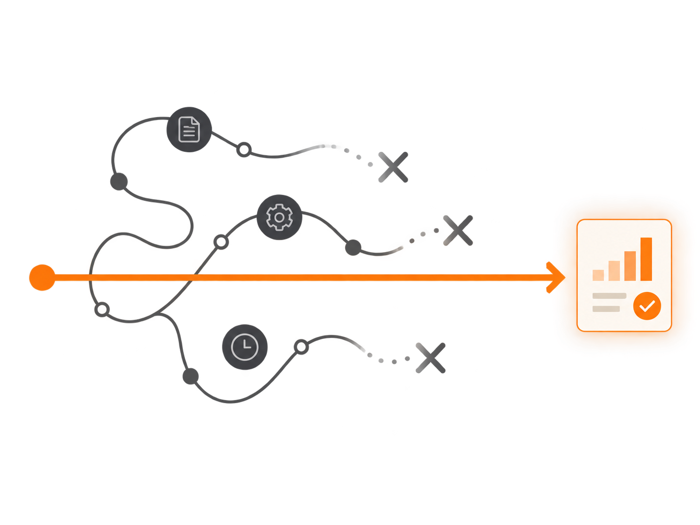

Обновление 1.4
Меньше действий от первого входа до результата.

01 / Зачем обновление
02 / Как упрощаем
03 / Понятный путь
04 / Что меняем
Упрощаем страницы и переходы между ними
Цель обновления 1.4
С минимумом действий между этими шагами.
 ChatGPT
ChatGPT Canva
Canva